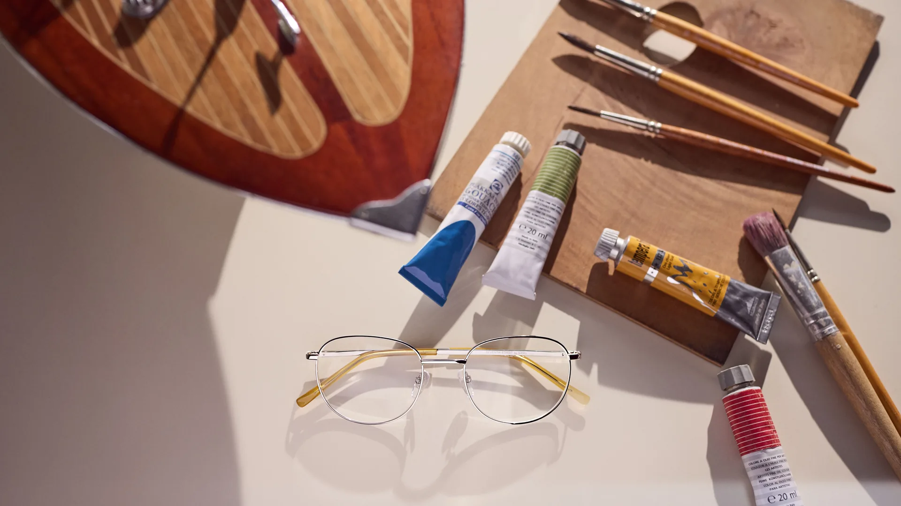
Gafas Safilo
en Irún
Donde el taller del artista se convierte en montura. Safilo lleva casi siglo y medio transformando la materia prima italiana en objetos de óptica extraordinarios, con un alma pintada a mano y una precisión sin concesiones.
Longarone
La historia
Artesanía italiana
desde los Dolomitas
En 1878, en el pequeño pueblo de Longarone, en el corazón de los Dolomitas vénetos, nació Safilo. Lo que comenzó como un taller artesanal de monturas en acetato se convirtió en una de las casas de eyewear más respetadas del mundo, sin renunciar nunca a ese espíritu manual de origen.
Hoy, la colección propia de Safilo es la destilación más pura de esa filosofía: monturas diseñadas en Italia, fabricadas con acetatos de primera calidad y fotografiadas entre pinceles, acuarelas y tubos de óleo, porque cada par de gafas Safilo es, ante todo, una obra de arte portátil.
En Óptica Anaka encontrarás la colección SL 7A — monturas ópticas de acetato con una silueta refinada — y la SL S, con gafas de sol que equilibran la herencia artesanal con el diseño contemporáneo.
Colección SL 7A
Doce expresiones de la montura de acetato italiana. Perfiles refinados, combinaciones de color únicas, nacidas entre pinceles y paletas de artista.
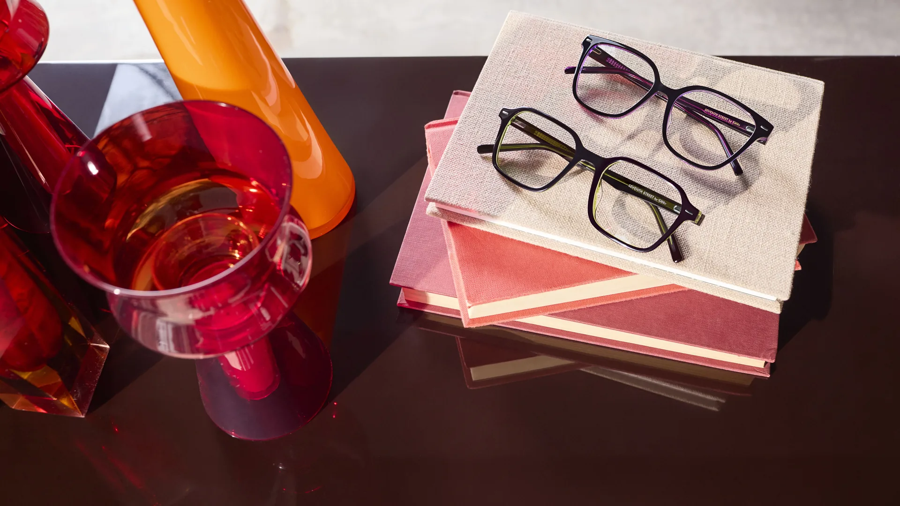
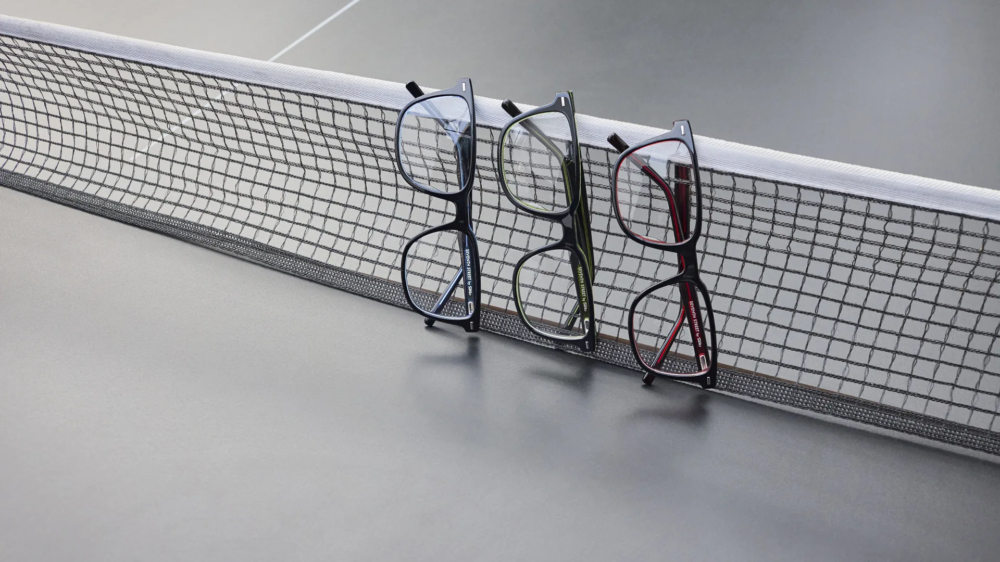
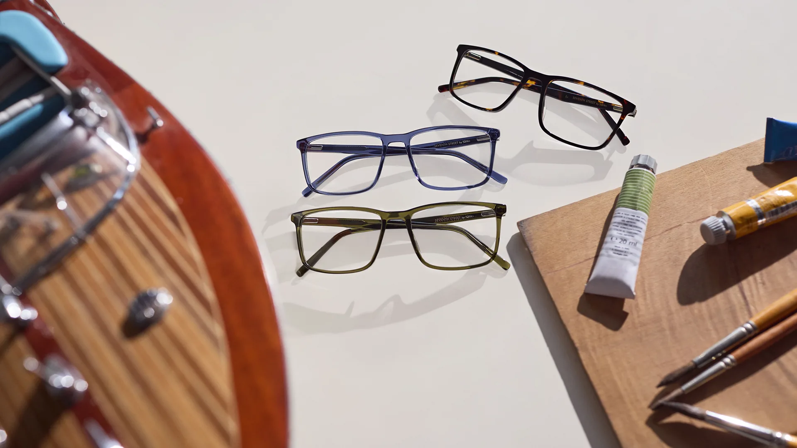
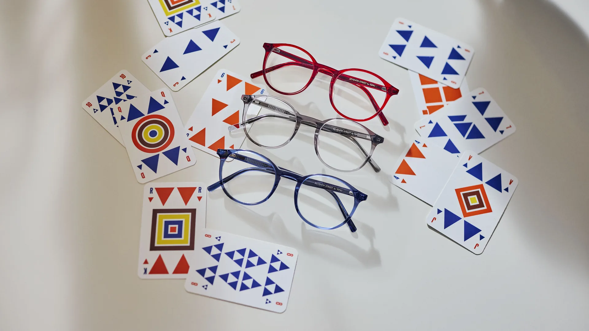
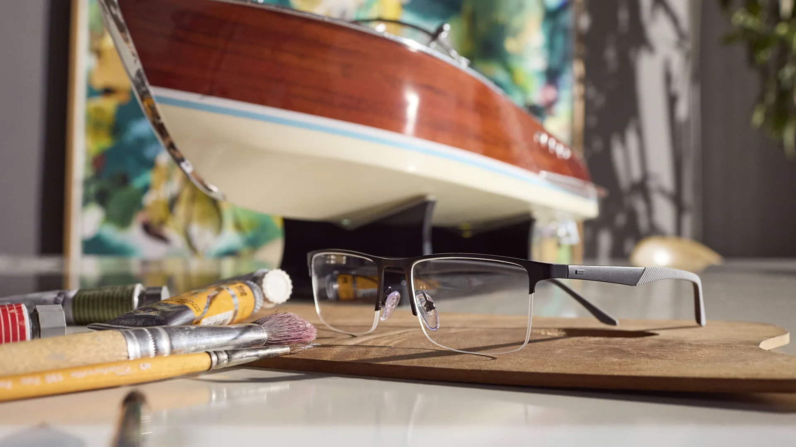
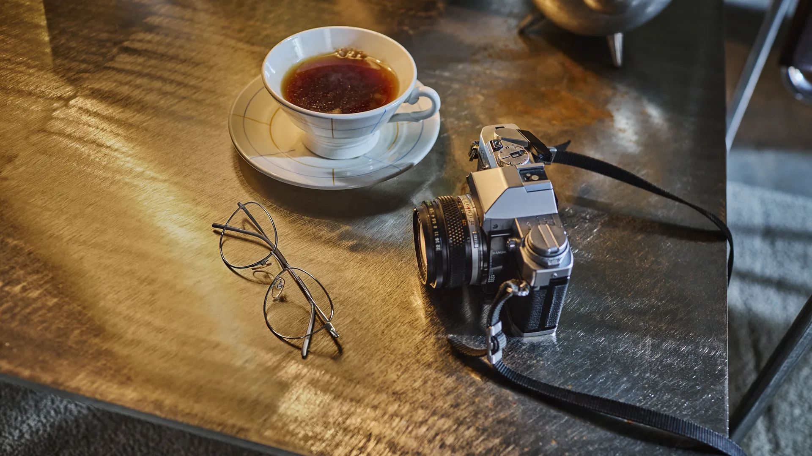
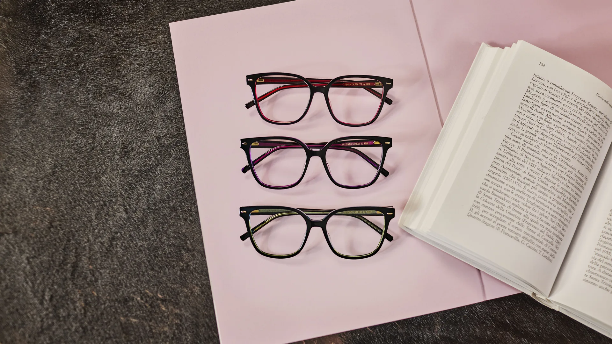
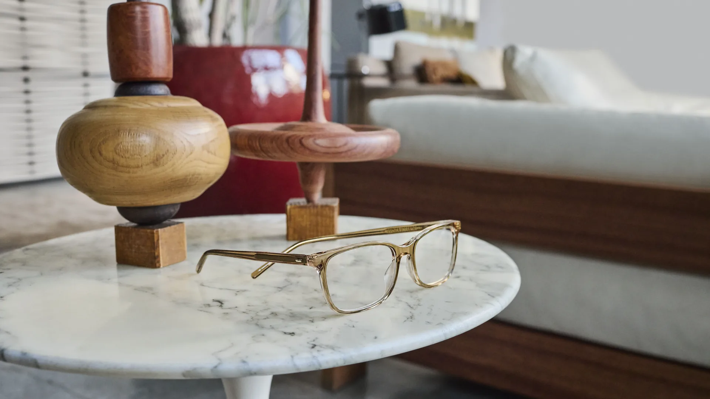
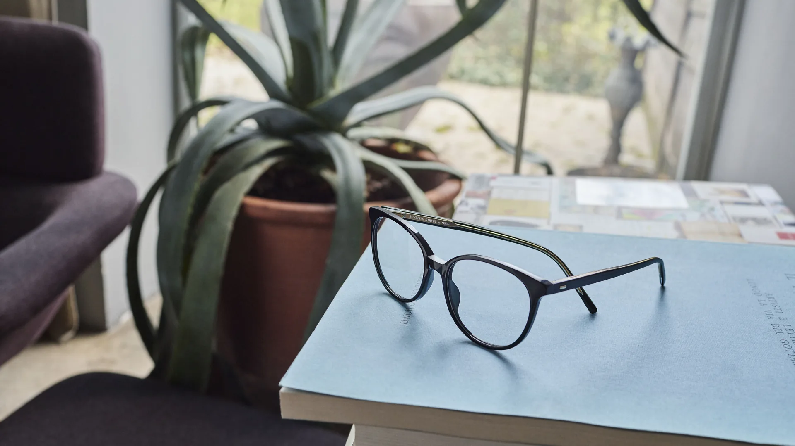
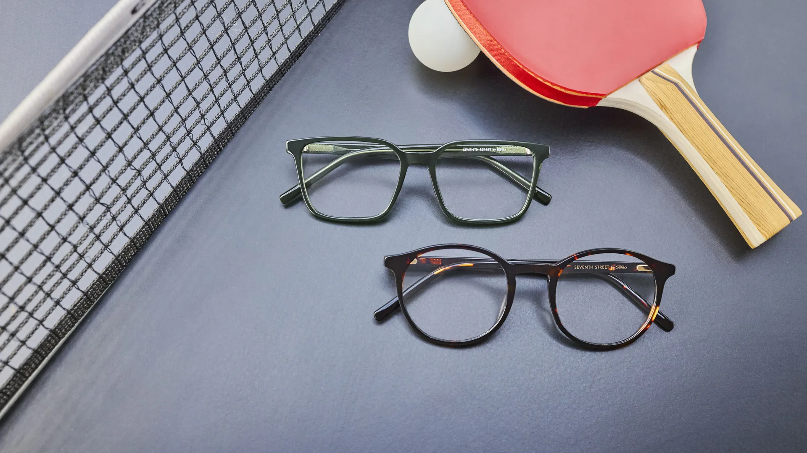
Edición especialSL 7A-138 & SL S-355
Una composición que reúne lo mejor de los dos universos Safilo: la precisión artesana de la montura óptica SL 7A y la expresividad solar de la SL S, ambas inmortalizadas entre pinceles y pigmentos como si fueran piezas de museo.
Esta imagen captura a la perfección la filosofía Safilo: gafas que son objetos de deseo antes de ser instrumentos ópticos, donde la forma importa tanto como la función.
Probar en tiendaColección SL S
Tres modelos solares que heredan la tradición artesanal de Safilo y la proyectan hacia el diseño contemporáneo. Estilo y protección UV de calidad italiana.
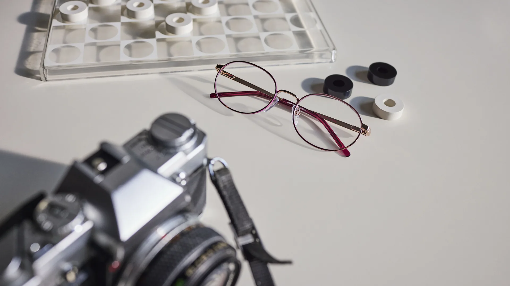
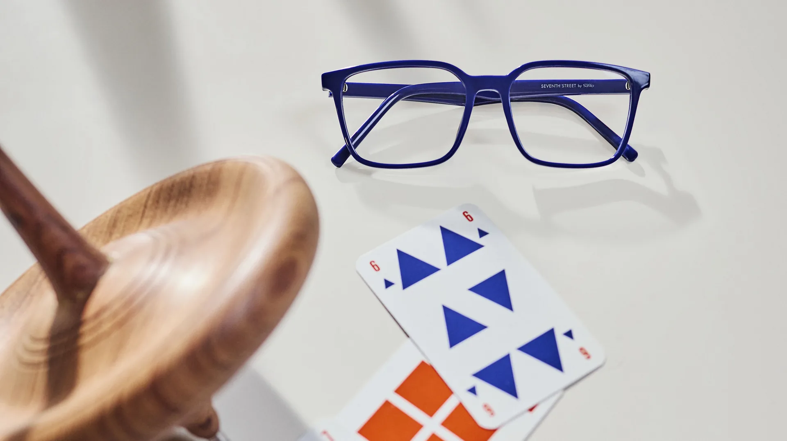
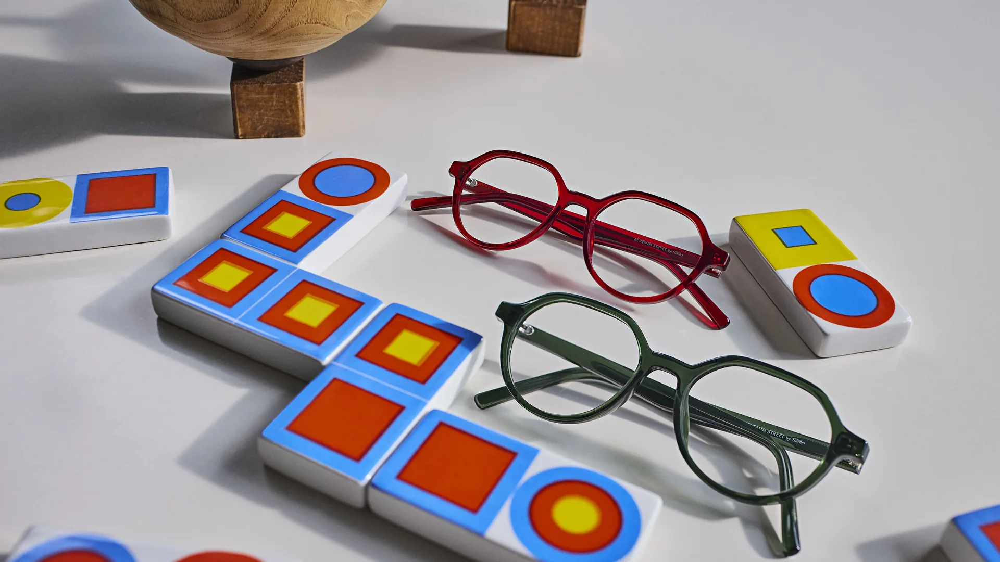
Visita nuestro taller
y pruébate la historia
En Óptica Anaka tenemos la colección Safilo disponible para probarte. Ven a descubrir la diferencia que hace un par de gafas fabricadas con casi 150 años de oficio italiano.